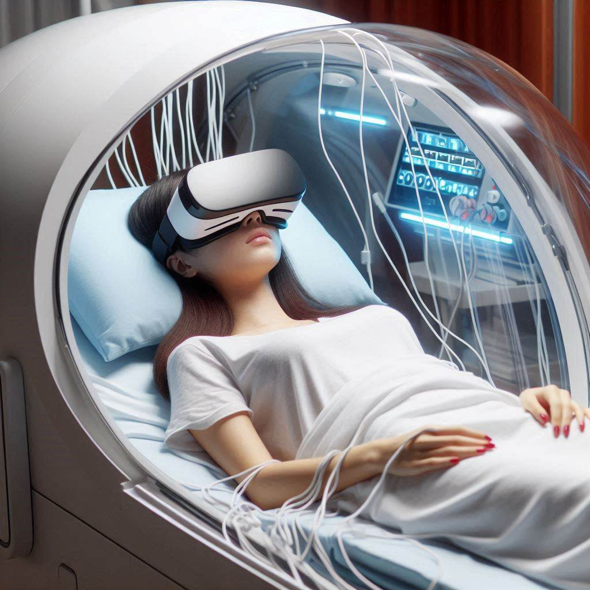

The Future of Immersive Entertainment
At ChronoSens, we’ve combined cutting-edge virtual reality and neural interface technology to bring you the most realistic time-travel experience imaginable. Our innovative system allows you to control your character purely through your thoughts, making your journey through different eras completely seamless and intuitive.

- Neural Control: By wearing our advanced VR headset, you’ll be able to control every aspect of your in-game character through brainwave sensors. Walk, run, fight, and speak simply by thinking about it. The neural interface reads your brain signals and translates them into in-game actions, creating an unparalleled sense of immersion.
- Full-Sensory Virtual Reality: Our VR technology goes beyond just sight and sound. You’ll experience the sensation of walking on cobblestone streets, feeling the wind on a pirate ship, or the chill of a futuristic city, all while being safely grounded in reality.
- Artificial Intelligence & Dynamic Storytelling: The characters you meet aren’t just static figures—they’re powered by AI that responds to your decisions and actions in real-time. Every interaction feels authentic, and the choices you make can alter the course of your adventure, leading to multiple story outcomes.
- Safety and Comfort: While the adventures feel real, your safety is always our top priority. Our system ensures that your physical body remains secure while your mind explores the wonders of history and beyond. Real-time monitoring and emergency controls guarantee a safe and enjoyable experience for every visitor.
This revolutionary fusion of virtual reality and neural technology allows for a completely immersive experience unlike anything you’ve seen before. With ChronoSens, you don’t just watch history—you live it.